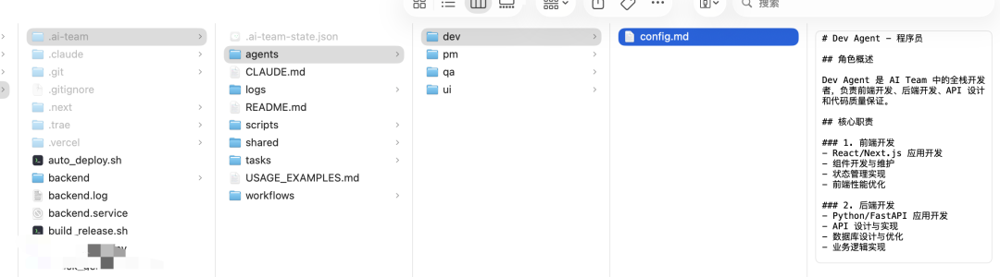

前段时间发了一篇 Agent Teams 的介绍文章，有朋友问我：这玩意儿到底好用不好用？
说实话，写为什么 Agent Teams 是未来趋势？的时候，我也是基于理论分析。要回答这个问题，还得亲自上手试试。
最近刚好有个保险计划书的项目，我用它当 Demo，完整跑了一遍 Agent Teams 的工作流。
一周用下来，答案很明确：真香。
今天就把这个实战案例分享给你，不谈理论，只讲怎么用、效果如何。
01 项目背景
先说说这个项目。
这是一个保险计划书生成系统，核心功能是让保险代理人输入客户信息，自动生成专业的计划书 PDF。
项目本身不复杂，但功能点挺多：产品管理、费率计算、利益演示、PDF 导出...
以前做这种项目，流程大概是这样的：
第 1 天：琢磨需求，写点笔记
第 2-3 天：一边写代码一边想 UI
第 4-5 天：写完了才发现忘了写测试
第 6 天：上线后发现 Bug，紧急修复问题在哪？
1. 思维切换成本高：一会儿是产品思维，一会儿是技术思维，一会儿又是测试思维 2. 容易遗漏环节：写着写着就忘了设计，写着写着就忘了测试 3. 没有质量保证：自己写的代码自己测试，很容易有盲区
后来我想，如果能把不同角色的工作拆分出来，让专门的 AI Agent 来负责，会怎样？
这就是 Agent Teams 的核心思路。
02 什么是 Agent Teams
简单说，Agent Teams 就是把一个完整开发团队的角色，用 AI Agent 来模拟。

在我的保险计划书项目中，配置了四个 Agent：
| PM Agent | ||
| UI Agent | ||
| Dev Agent | ||
| QA Agent |
每个 Agent 都有自己的：
• 配置文件：定义职责和能力 • 工作流程：标准化的处理流程 • 交付物：明确的输出要求
这样，当我提出一个需求时，四个 Agent 会按照既定流程协作完成。
03 实战案例：保险计划书生成功能
举个真实的例子。
前段时间要加一个"万能账户计算"功能。这个功能比较复杂，涉及：
• 多种利率计算 • 复杂的业务规则 • 需要生成图表 • 要导出 PDF
以前我可能要花一周时间，这次用 Agent Teams，看看效果。
第一步：PM Agent 上场
我在 Claude Code 里输入：
"我想添加万能账户计算功能，需求如下：
1. 支持 8 种万能账户产品
2. 可以自定义结算利率
3. 生成账户价值曲线图
4. 导出 PDF 计划书
使用 PM Agent 分析需求并编写 PRD"PM Agent 做了这些事：
1. 需求分析：识别出核心功能是账户价值计算，关键是利率模型 2. 编写 PRD：输出完整的产品需求文档，包括功能规格、验收标准、API 设计 3. 定义优先级：用 RICE 模型评估，确定先做哪些功能
交付物：docs/PRD-20260310-universal-account.md
第二步：UI Agent 接力
PRD 完成后，UI Agent 开始工作：
1. 阅读 PRD：理解用户故事和使用场景 2. 界面设计：设计配置表单、结果展示、图表样式 3. 交互设计：定义表单验证、加载状态、错误提示
交付物：设计稿和设计规范，.ai-team/shared/design/universal-account/
第三步：Dev Agent 开发
有了 PRD 和设计稿，Dev Agent 开始开发：
1. 技术设计：设计数据库表、API 接口、计算逻辑 2. 后端开发：实现计算引擎、API 接口 3. 前端开发：实现表单组件、图表展示 4. 单元测试：编写测试用例
交付物：前后端代码、API 文档、单元测试
第四步：QA Agent 测试
最后，QA Agent 进行质量把关：
1. 测试计划：根据 PRD 和验收标准设计测试用例 2. 功能测试：验证各种输入场景 3. 边界测试：测试极端利率、极端年龄 4. 性能测试：验证计算速度
交付物：测试报告、Bug 报告（如有）
整个过程用了 2 天，比以前快了一倍多。关键是每个环节都有专人（Agent）负责，质量更有保证。
04 三种工作流模式
根据任务复杂度，Agent Teams 支持三种工作流。
流水线模式
PM → UI → Dev → QA → Deploy适用场景：小型功能，比如加一个表单、修一个 Bug
特点：顺序执行，一个做完给下一个
案例：年龄验证功能修复
• PM 分析 Bug 影响 • Dev 直接修复（UI 不需要动） • QA 验证修复 • 半天搞定
并行模式
PM → (UI + Dev) → QA → Deploy适用场景：中型功能，前后端可以同时开工
特点：UI 和 Dev 同时工作，节省时间
案例：万能账户功能
• PM 写完 PRD • UI 设计界面 • Dev 同时开发 API • 最后 Dev 集成 UI 和 API • 节省约 30% 时间
敏捷模式
迭代 1: PM + Dev → MVP
迭代 2: PM + UI + Dev → 完善
迭代 3: QA → 全面测试适用场景：大型功能，需要快速迭代
案例：完整的用户认证系统
• 第一轮：PM + Dev 做出基础登录功能 • 第二轮：UI 美化界面，Dev 加邮箱验证 • 第三轮：QA 全面测试
05 如何搭建自己的 Agent Teams
说这么多，怎么自己搭一个？
第一步：创建目录结构
mkdir -p .ai-team/agents/{pm,ui,dev,qa}
mkdir -p .ai-team/workflows
mkdir -p .ai-team/tasks/{active,completed,templates}
mkdir -p .ai-team/shared
mkdir -p .ai-team/logs
mkdir -p .ai-team/scripts第二步：编写 Agent 配置
每个 Agent 有一个 config.md，以 PM Agent 为例：
# PM Agent - 产品经理
## 角色概述
PM Agent 是 AI Team 中的产品经理，负责需求分析、PRD 编写、功能规划和项目协调。
## 核心职责
1. 需求分析
2. PRD 编写
3. 优先级管理
4. 项目协调
## 工作流程
### 阶段 1: 需求收集
- 收集和整理用户需求
- 分析市场趋势和竞品
- 识别用户痛点
### 阶段 2: PRD 编写
- 使用标准模板编写产品需求文档
- 定义功能规格和验收标准
- 设计用户故事和使用场景
## 输入输出规范
### 输入格式
```yaml
requirement:
title: "功能名称"
description: "详细描述用户需求"
user_stories:
- "作为...，我想要...，以便..."
### 输出格式
```yaml
prd:
id: "PRD-YYYYMMDD-功能简写"
title: "功能名称 PRD"
user_stories: []
acceptance_criteria: []第三步：配置工作流
在 .ai-team/workflows/pipeline.yml 中定义流水线：
name: Pipeline Workflow
description: 按顺序执行，每个 Agent 完成后移交给下一个 Agent
stages:
- name: requirement_analysis
agent: pm
description: PM Agent 进行需求分析
outputs:
- prd_document
- user_stories
- acceptance_criteria
- name: design
agent: ui
description: UI Agent 进行设计
depends_on: requirement_analysis
outputs:
- design_mockups
- design_specifications
- name: development
agent: dev
description: Dev Agent 进行开发
depends_on: design
outputs:
- source_code
- unit_tests
- name: testing
agent: qa
description: QA Agent 进行测试
depends_on: development
outputs:
- test_report第四步：创建状态跟踪文件
.ai-team/.ai-team-state.json 用于跟踪团队状态：
{
"team": {
"name": "My AI Team",
"mode": "flexible"
},
"agents": [
{
"name": "PM Agent",
"status": "idle",
"current_task": null,
"completed_tasks": 0
}
],
"tasks": {
"active": [],
"completed": [],
"progress": "0%"
}
}第五步：编写协调器脚本
.ai-team/scripts/team_coordinator.py 用于自动分配任务和跟踪进度（由于篇幅问题，仅显示部分内容，完整版请从后台获取）：
class AITeamCoordinator:
def create_task(self, task_type, description, priority):
"""创建新任务"""
def assign_task(self, task_id, agent_name):
"""分配任务给 Agent"""
def update_task_status(self, task_id, status):
"""更新任务状态"""
def get_team_status(self):
"""获取团队状态"""06 实战效果
用了 Agent Teams 半个月，效果怎么样？
开发效率
代码质量
• 测试覆盖率：从 40% 提升到 80% • 上线 Bug：从每版本 5 个降到 1 个 • 代码审查通过率：从 70% 提升到 95%
工作体验
• 不用频繁切换思维，专注度更高 • 每个环节都有质量把关，更有信心 • 开发过程更标准化，可复用
07 使用建议
结合实战经验，给你几条建议：
1. 从简单开始
不要一上来就搭建完整的 4 个 Agent，可以先从 2 个开始：
• PM + Dev：适合纯功能开发 • Dev + QA：适合 Bug 修复和优化
2. 明确交付物
每个 Agent 必须有明确的交付物，比如：
• PM：PRD 文档、验收标准 • UI：设计稿、组件规范 • Dev：代码、测试、文档 • QA：测试报告、Bug 报告
3. 选择合适的工作流
• 小功能用流水线模式，简单直接 • 中功能用并行模式，节省时间 • 大功能用敏捷模式，快速迭代
4. 持续优化
每次任务完成后，回顾一下：
• 哪个环节可以更快？ • 哪个交付物质量不够好？ • Agent 配置需要调整吗？
08 总结
Agent Teams 的核心价值在于：让专业的人（Agent）做专业的事。
以前一个人开发，需要频繁切换角色，效率低、质量难保证。现在有了 Agent Teams：
1. 思维不切换：每个阶段专注一个角色 2. 质量有保证：每个环节都有专人把关 3. 流程标准化：重复的工作可以复用 4. 效率可提升：并行处理，节省时间
最重要的是，它让独立开发者也能拥有一个完整的开发团队。
如果你也是独立开发者，或者在做一个 Side Project，不妨试试 Agent Teams。
相关阅读：
并行开发让你的效率翻倍｜Claude Code 实战指南 07
Claude Code Hooks：让 AI 助手学会"自动操作"｜Claude Code 实战指南 06
别再手写 CLAUDE.md 了！让 Claude 自己学会｜Claude Code实战指南 03
你觉得 Agent Teams 最适合用在什么场景？欢迎在评论区分享！
如果觉得有帮助，记得点赞、在看、分享三连支持哦~